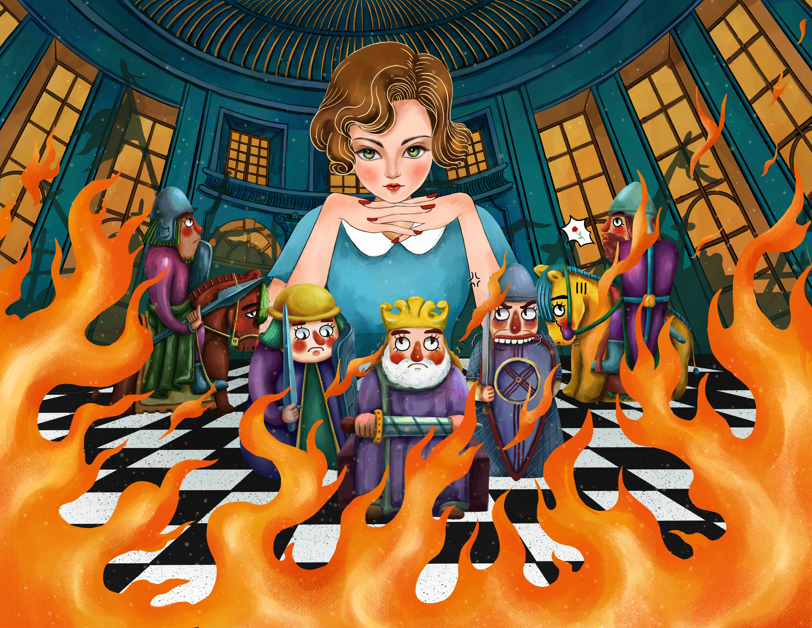
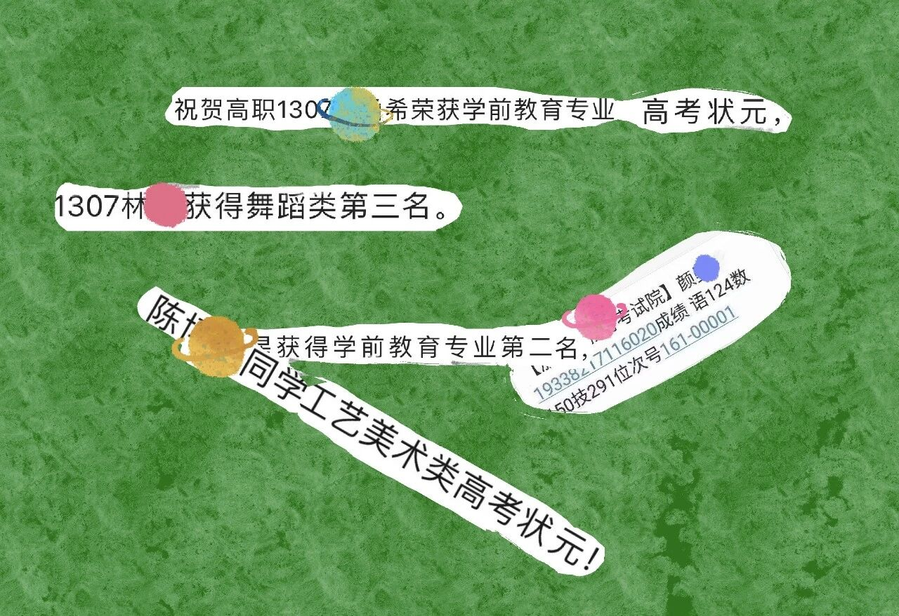
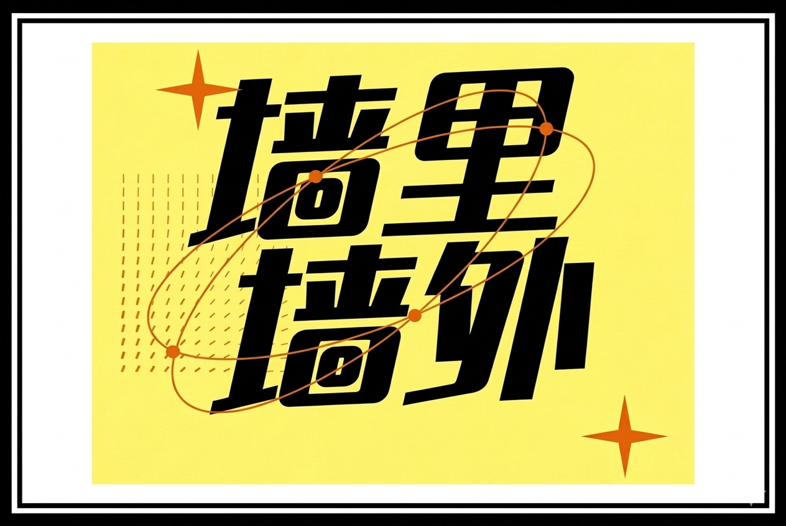
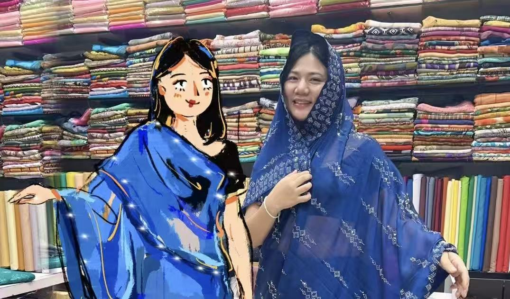
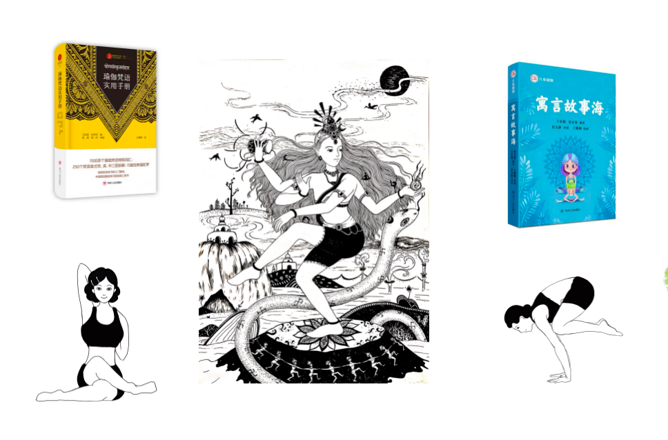

ILLUSTRATION PORTFOLIO
灵魂的颜色
一个裸辞十年教师编制，探索人生的未来准艺术家，绘画、旅行、教育、瑜伽、播客是我的生活碎片。

ART GALLERY 绘画作品 VR绘画、B站春晚、电脑插画、系列作品与手绘作品
EDUCATION 教育之路 教育故事、教育思考和学生作品
PODCAST 播客 小宇宙《墙里墙外》100+ 期声音档案
LIFE 生活与旅行 旅行故事、生活记录、选择的城市与国家01 / ABOUT ME
02 / ART GALLERY
绘画作品
查看可购买作品03 / PUBLISHING
画册出版
这里呈现已经出版或正在筹备的画册、图文集与创作项目。
04 / PODCAST
05 / EDUCATION
教育探索
06 / YOGA PATH
瑜伽之路

身体、呼吸、语言、儿童教育和身心灵成长的另一条线索。
07 / LIFE & TRAVEL
生活与旅行
旅行故事、日常生活、城市与国家，是作品背后的真实地理。
08 / SHOP
衍生艺术品购买
先以“收藏咨询 / 心愿单”形式承接购买意向，之后可接入支付与库存系统。